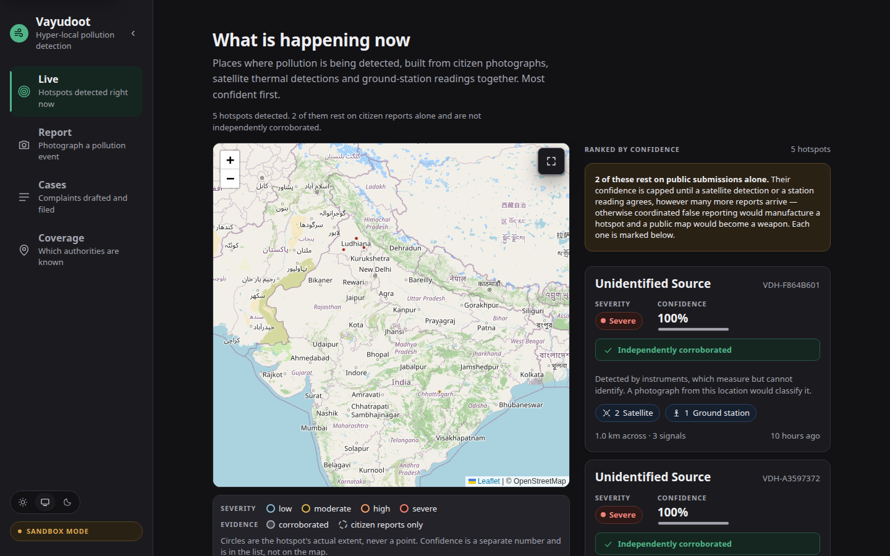
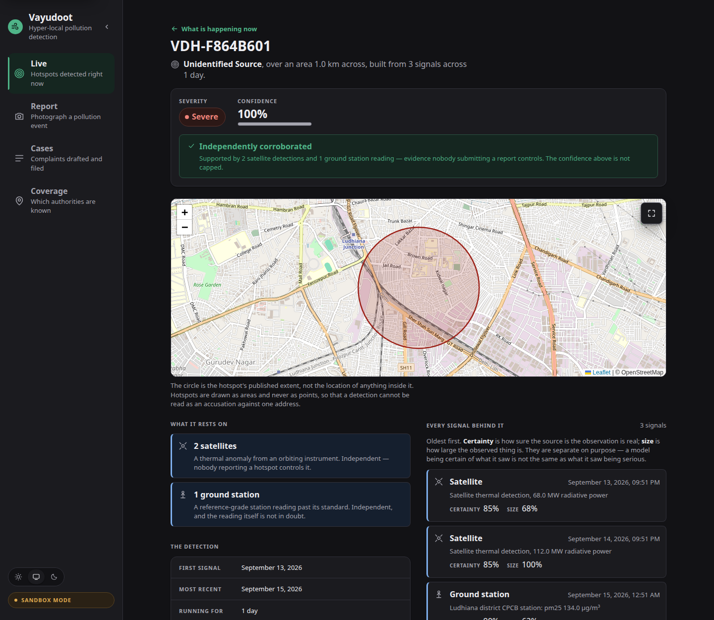

Build with AI: Code for Communities · Problem statement 02
A hyper-local pollution detection network in which citizen reports are one class of sensor.
It joins citizen photographs to satellite thermal detections, ground-station readings and meteorology to find the pollution events that city-scale monitoring misses — then forecasts what is coming, and hands the responsible authority a corroborated case it can act on.
Working prototype · vayudoot.onrender.com · 446 tests · free tier, no credit card
The problem
A reference-grade station reports a number for a district. It cannot see the waste fire behind one building, the stack venting at 2am, or the field burning forty kilometres upwind of a city that will be breathing it tomorrow.
Those hyper-local events are most of the exposure and almost none of the data.
And when somebody does notice, acting on it is hours of unglamorous work: identify it, prove it is not a one-off, find which of several overlapping authorities has jurisdiction at that exact spot, cite the right statute, file, then chase for weeks.
Almost nobody does this. The pollution continues because the paperwork defeats people, not because the law is missing.
The insight the whole system turns on
If only reports create hotspots, the map is empty everywhere nobody has used the app — which is most of India. And an empty map is indistinguishable from clean air.
Satellite thermal detections and station exceedances raise hotspots on their own. The map has national content before one citizen opens the page. A satellite sees heat, though — not fuel — so it never guesses what is burning.
A photograph does what only a photograph can: it upgrades a hotspot, naming what is actually burning and turning a thermal anomaly into a describable event a legal complaint can be written about.
This is also what defeats brigading. Fifteen coordinated fake reports cannot manufacture a hotspot when independent evidence has to agree.
What it does

Where Google AI does the work
| Stage | What the model actually does | Tier |
|---|---|---|
| Evidence | Reads up to four photographs as one event — classifies the pollution type, estimates severity, names the visible indicators, returns a calibrated confidence. Multimodal, and the only stage that can say what is burning. | Flash |
| Corroboration | A three-agent parallel graph: satellite, ground station, meteorology, plus a synthesis node that back-traces the plume upwind. | Flash-Lite |
| Jurisdiction | Reverse geocodes and resolves the responsible authority, statute, statutory window and escalation path. | Flash-Lite |
| Drafting | Writes the formal complaint in the register the authority expects, in English and the region's language, citing only the statute supplied. | Flash |
| Forecast | Reads pollutant and wind forecasts against active upwind hotspots and produces a risk window with its reasoning and its inputs. | Flash-Lite |
| RTI | Drafts a Right to Information application when the statutory window lapses. | Flash-Lite |
Two tiers, by cost: only the two stages needing judgement use Flash. Every stage returns a typed Pydantic model via structured output — stages hand each other objects, never free text.
05The part we take most seriously
Moving from private complaints to a public map creates harms that did not exist before. Three rules are enforced in code, each with a test that says it is holding a constraint rather than checking a function.
Every hotspot has a minimum published radius of 1 km. A detection drawn tightly around one building is an accusation against whoever occupies it, with no name needed.
Uncorroborated hotspots are capped at 0.6 — no quantity of public submissions climbs past it, because quantity is what a campaign can manufacture. Shown, flagged, never hidden.
Every forecast carries its inputs and a disclaimer on the object itself, not in a template. It is never presented as, or confusable with, a CPCB or IMD forecast.
Nothing reaches a real regulator. Every committed authority
address is on the reserved .invalid TLD and no delivery
transport is wired in, both asserted by tests. Filing happens only after a
human confirms. A prototype that can email a State Pollution Control Board
during a demo is a liability, not a feature.
Evidence, not assertion

A number on a map is an assertion. This view exists so a reader can decide for themselves whether the confidence above is earned.
Forecasting
Gemini reads an Open-Meteo pollutant forecast, an Open-Meteo wind forecast, and every detected hotspot within 400 km upwind — the distance air actually covers in the 72-hour horizon.
Reported per location and per economic corridor: six of them, each a line of sampling points across several states — the NCR, the Delhi–Mumbai Industrial Corridor, the Punjab–Haryana stubble belt, Mumbai–Pune, Chennai–Bengaluru, Kolkata–Durgapur. A corridor takes the worst risk any waypoint carries, never the average: it is a population strip, and the segment in trouble is the thing to act on.
Not a trained predictor, and it says so on every object it produces. Vertex AI would be the obvious tool and needs a billing account — so this reasons over public data instead, and labels itself honestly.
risk: elevated · confidence: 0.75
“Stagnant meteorological conditions with a low mean wind speed of 1.27 m/s and 49 stagnant hours over the 72-hour horizon.”
“Modelled PM2.5 exceeding the Indian 24-hour standard for 24 hours with a peak of 95.7 µg/m³.”
“Active hotspots are located to the north (208 km) and north-west (282 and 286 km), but wind is arriving from the south-south-west, so air is not arriving from these northern hotspots.”
It was handed three severe hotspots and declined to blame them. That is the harder answer and the correct one.
Interoperability
Stubble smoke from Punjab reaches Delhi about a day and a half later. It is the best-documented pollution event in India and it crosses a state boundary — which is exactly why no single-state system catches it.
GET /feedShared: a detection layer. Not shared: trained weights. That is the honest reading of “share predictive models”. Federated training could not be built in this window, and claiming it without building it costs more than it earns.
Standing up a second state is configuration, not code: a node id, a region, and a comma-separated list of neighbour feed URLs. No registry, no central authority, no permission needed — reading a public feed is reading a public feed.
python scripts/federation_demo.py runs two real nodes over
the real HTTP contract. Nothing is mocked.
Depth and reach across India
Jurisdiction lives in authorities.example.json, keyed by
administrative region. Corridors live in corridors.json.
Adding Assam is a JSON edit. This is the property that decides whether a
prototype can become a national system or stays a Delhi demo — and it was
a constraint from the first commit, not a retrofit.
Every jurisdiction match reports whether it was exact,
a fallback one tier up, or a generic placeholder —
and a case carrying a fallback says so on its own page. A system that
quietly substitutes an authority is worse than one that admits it does not
know.
Deployability
| Inference | Gemini via Google AI Studio — no billing account, no card |
| Compute | Render free tier, one FastAPI process serving API and interface together |
| Storage | Neon Postgres free tier; JSON files when unset |
| Evidence | NASA FIRMS, OpenAQ, Open-Meteo, Nominatim — all free |
| Interface | Preact as native ES modules. No bundler, no build step, no Node |
A state could also run it entirely on its own hardware: the model provider is one environment variable, and Ollama is a supported, tested path.
Google Cloud proper is deliberately unused. Its free tier — the $300 trial and Always Free alike — requires a billing account and a card. We had none. So Vertex AI, Cloud Run and Maps Platform are out, and nothing in the build pretends otherwise.
That constraint made the system more deployable, not less. A state agency that can pilot this without raising a purchase order is a state agency that can pilot it in weeks.
Impact, and what is honestly next
The next thing worth building is not a feature. It is one state running one node for one burning season, and finding out how much of this survives contact with a real Pollution Control Board.
vayudoot.onrender.com · source, tests and the reasoning behind
every constraint in the repository